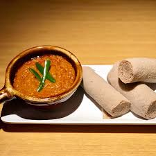

Shiro Wat: Ethiopian Dish

Shiro wat is my favorite Ethiopian dish. This richly spiced and thick soup is amazingly delicious. It is also incredibly easy to make using whatever spices you have in your pantry!
Ingredients:
- Chickpea flour: Use finely ground chickpea flour, including besan.
- Tomatoes: One big tomato.
- Onion: One medium red oninon.
- Garlic: use freshly minced garlic for the best flavor.
- Green Chili: For garnish.
- Oil: Olive oil
- Berbere: A blend of warm spices, including coriander, cardamom and red chili peppers.
How to Make Shiro Wot
- Place the onions in a dry saucepan or Dutch oven (no oil). Add a generous pinch of salt and saute over medium heat until they start to brown. Add water, a tablespoon at a time, if needed to keep them from sticking to the pan.
- Add 2 tablespoons of niter kibbeh and continue cooking the onions until they are very soft and brown. Stir frequently.
- Add garlic and mix it in. Saute a couple of minutes.
- Stir in the tomatoes and mix.
- Let the tomatoes cook, stirring frequently, until they are very soft and pulpy.
- Stir in the chickpea powder and mix well until no dry flour remains in the pan.
- Add the berbere and paprika. Mix well and then slowly trickle in 2 cups hot water into the chickpea mixture, whisking as you go. You can add a couple more tablespoons of niter kibbeh at this point for even better flavor.
- Bring the shiro to a boil, then reduce heat to medium-low, cover, and let it cook 10-15 minutes until the chickpea flour has lost its raw flavor, the shiro has thickened, and little droplets of oil can be seen on top. Shiro should be thick, but if it is too thick for your liking, you can whisk in up to ½ cup more of hot water. Garnish, if you like, with sliced, fresh, green chili peppers.